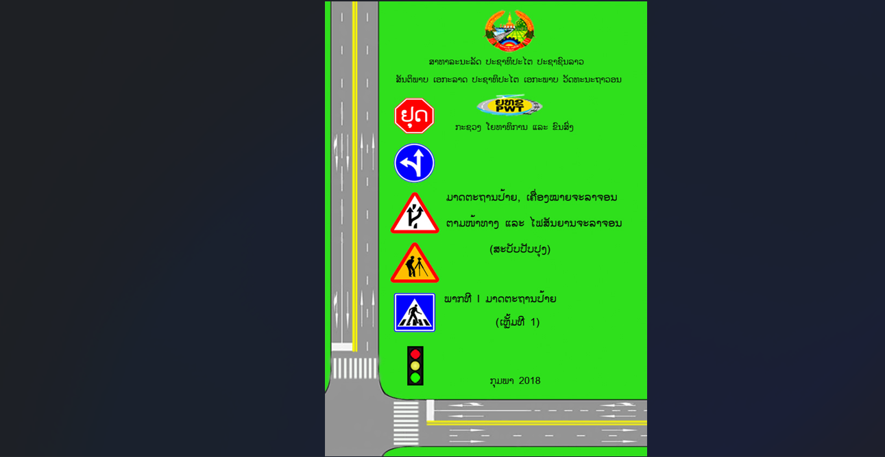
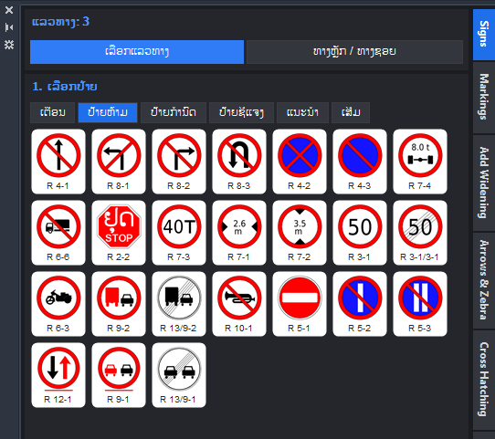
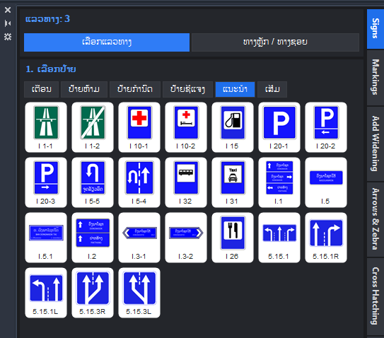

Traffic Sign & Road Marking
ວາງປ້າຍຈະລາຈອນຕາມ Alignment ແລະ ແຕ້ມເຄື່ອງໝາຍໜ້າທາງ ໄດ້ໄວ ແລະ ຖືກທິດ.
 ຮູບຕົວຢ່າງ
ຮູບຕົວຢ່າງຮູບໜ້າຈໍ
ຕົວຢ່າງການໃຊ້ງານຈິງໃນ AutoCAD.

ລໍຖ້າຮູບ
ລໍຖ້າຮູບ
ລໍຖ້າຮູບແບບເກົ່າ ທຽບກັບ ໃຊ້ Add-in
ວຽກດຽວກັນ, ໃຊ້ເວລາໜ້ອຍລົງ ແລະ ຜິດພາດໜ້ອຍລົງ.
ແຕ້ມດ້ວຍມື
- Insert Block ປ້າຍ ແລ້ວໝຸນເອງທີລະອັນ
- ແກ້ Alignment ແລ້ວຕ້ອງຍ້າຍປ້າຍໃໝ່ໝົດ
- ແຕ້ມເສັ້ນທຶບ/ເສັ້ນປະເອງທຸກໂຄ້ງ
- ນັບປ້າຍເຮັດລາຍການດ້ວຍມື
- ສ້າງ Layout ເອງທີລະແຜ່ນ
- ພິມລາຍການປ້າຍລົງ Excel ເອງ ເພື່ອເຮັດ BOQ
ໃຊ້ Traffic Sign & Road Marking
- ເລືອກປ້າຍຈາກຮູບ, ຄລິກວາງ, ຕັ້ງສາກກັບທາງອັດຕະໂນມັດ
- ແກ້ Alignment ແລ້ວປ້າຍຍ້າຍຕາມ
- ເສັ້ນທຶບໃນໂຄ້ງຕັ້ງໃຫ້ອັດຕະໂນມັດ
- ລາຍການປ້າຍອອກຈາກ Code ແລະ ຄຳອະທິບາຍ
- ສ້າງ Layout ໃຫ້ອັດຕະໂນມັດ
- ສົ່ງອອກ Excel ເພື່ອເຮັດ BOQ ແລະ ສັ່ງຜະລິດປ້າຍ
ຄຸນສົມບັດ
ສິ່ງທີ່ Add-in ນີ້ເຮັດໃຫ້ທ່ານ.
ເລືອກປ້າຍຈາກຮູບ
Palette ມີຮູບປ້າຍໃຫ້ເບິ່ງ, ບໍ່ຕ້ອງຈື່ຊື່ Block.
ວາງຕັ້ງສາກກັບທາງ
ຖານປ້າຍຢູ່ເທິງ Alignment, ເລືອກຂ້າງຊ້າຍ/ຂວາ ດ້ວຍເມົ້າ, ເຫັນຕົວຢ່າງກ່ອນວາງ.
ຍ້າຍຕາມເມື່ອແກ້ທາງ
ປ້າຍຮັກສາຕຳແໜ່ງ ແລະ ປັບທິດຕາມ Alignment ໃໝ່.
ເຄື່ອງໝາຍໜ້າທາງ
ແຖບແຍກໃນ Palette, ເລືອກ 2 ເລນ ຫຼື 4 ເລນ ພ້ອມຮູບຕົວຢ່າງ.
ເສັ້ນທຶບໃນໂຄ້ງ
ຕັ້ງເສັ້ນກາງທຶບໃນໂຄ້ງໃຫ້ອັດຕະໂນມັດ, ແລ້ວແກ້ໄຂແຕ່ລະຊ່ວງໄດ້.
ລາຍການປ້າຍ
Code ແລະ ຄຳອະທິບາຍ ຢູ່ຄົນລະ Layer, ໃຊ້ສ້າງລາຍການປ້າຍໄດ້.
ສ້າງ Layout ອັດຕະໂນມັດ
ສ້າງແຜ່ນ Layout ຂອງແບບປ້າຍໃຫ້ເອງ, ບໍ່ຕ້ອງຈັດທີລະແຜ່ນ.
ສົ່ງອອກ Excel
ລາຍການປ້າຍ ແລະ ຈຳນວນ ອອກເປັນ Excel, ໃຊ້ເຮັດ BOQ ແລະ ສັ່ງຜະລິດປ້າຍໄດ້ເລີຍ.
ວິທີໃຊ້
ຈາກເປີດ ຈົນໄດ້ຜົນ.
ເປີດ Palette
ກົດປຸ່ມໃນແຖບ CH Tool.
ເລືອກປ້າຍ
ເລືອກຈາກຮູບປ້າຍ.
ວາງ
ຄລິກ Alignment, ເລືອກຂ້າງດ້ວຍເມົ້າ.
ແຕ້ມເຄື່ອງໝາຍທາງ
ເລືອກຈຳນວນເລນ ແລ້ວແຕ້ມ.
ລາຍລະອຽດ
ຂໍ້ມູນທາງເຕັກນິກ ແລະ ໂປຣແກຣມທີ່ໃຊ້ໄດ້.
ໃຊ້ໄດ້ກັບ
ຄຳຖາມທີ່ພົບເລື້ອຍ
ກົດຄຳຖາມເພື່ອເບິ່ງຄຳຕອບ.
ຕ້ອງໃຊ້ອິນເຕີເນັດຕະຫຼອດບໍ?
ບໍ່ຕ້ອງ. ຕໍ່ອິນເຕີເນັດພຽງຄັ້ງດຽວຕອນເປີດໃຊ້ License, ຫຼັງຈາກນັ້ນໃຊ້ອອບລາຍໄດ້.
1 License ໃຊ້ໄດ້ຈັກເຄື່ອງ?
1 Key ໃຊ້ໄດ້ 1 ເຄື່ອງ.
ປ່ຽນຄອມໃໝ່ເຮັດແນວໃດ?
ທັກ WhatsApp ແຈ້ງ, ພວກເຮົາຈະຍົກເລີກເຄື່ອງເກົ່າ ແລະ ອອກ Key ໃໝ່ໃຫ້.
ໃຊ້ໄດ້ໃນ AutoCAD ທຳມະດາບໍ?
ໄດ້. ໃຊ້ Polyline ແທນ Alignment.
ຕິດຕັ້ງຍາກບໍ?
ບໍ່ຍາກ. ໃຊ້ໄຟລ໌ Setup (MSI) ຄລິກດຽວ, ແລ້ວເປີດ AutoCAD ໃໝ່.
ມີຄົນຊ່ວຍເຫຼືອບໍ ຖ້າໃຊ້ບໍ່ເປັນ?
ມີ. ທັກ WhatsApp ສົ່ງຮູບໜ້າຈໍມາ, ຜູ້ພັດທະນາຕອບເອງ.
ສອບຖາມ ແລະ ສັ່ງຊື້
ທິບພະຈັນ ພູໄຊ · ຜູ້ພັດທະນາ